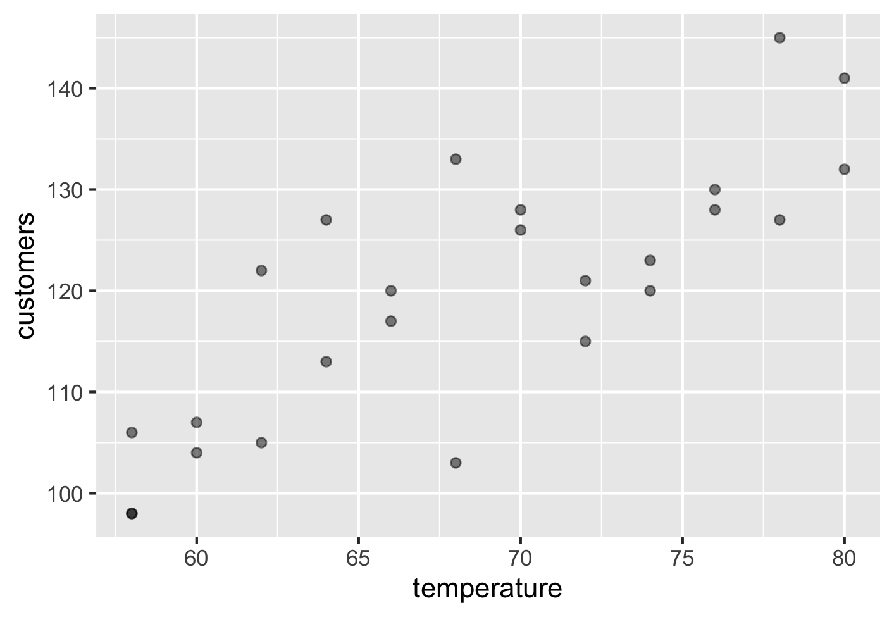
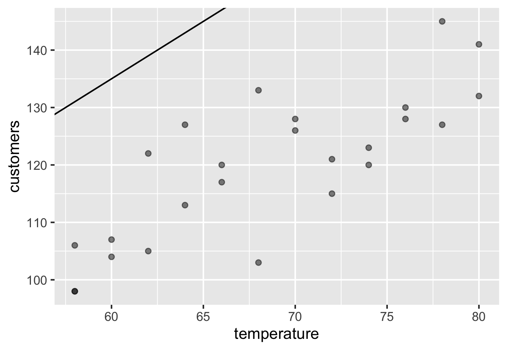
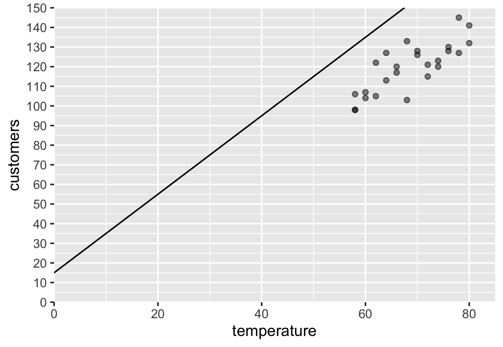
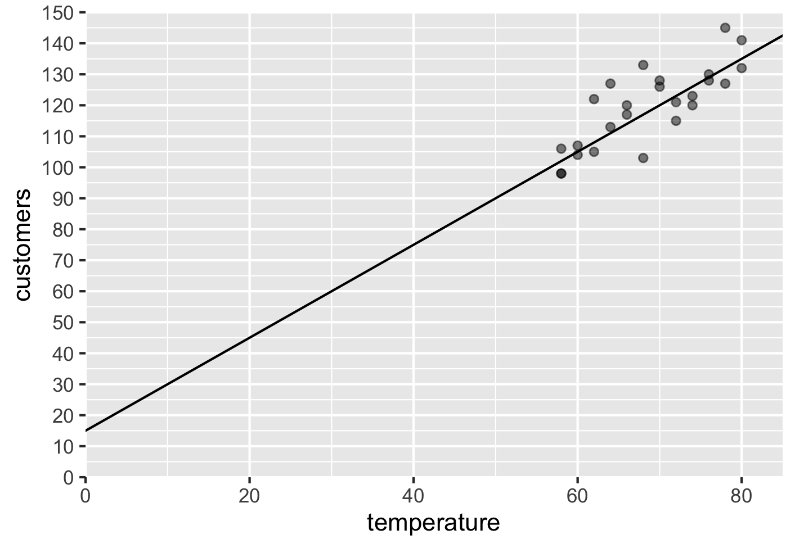
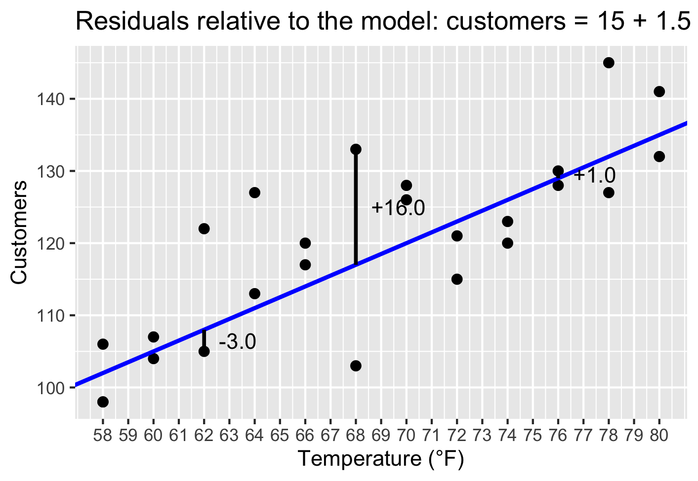
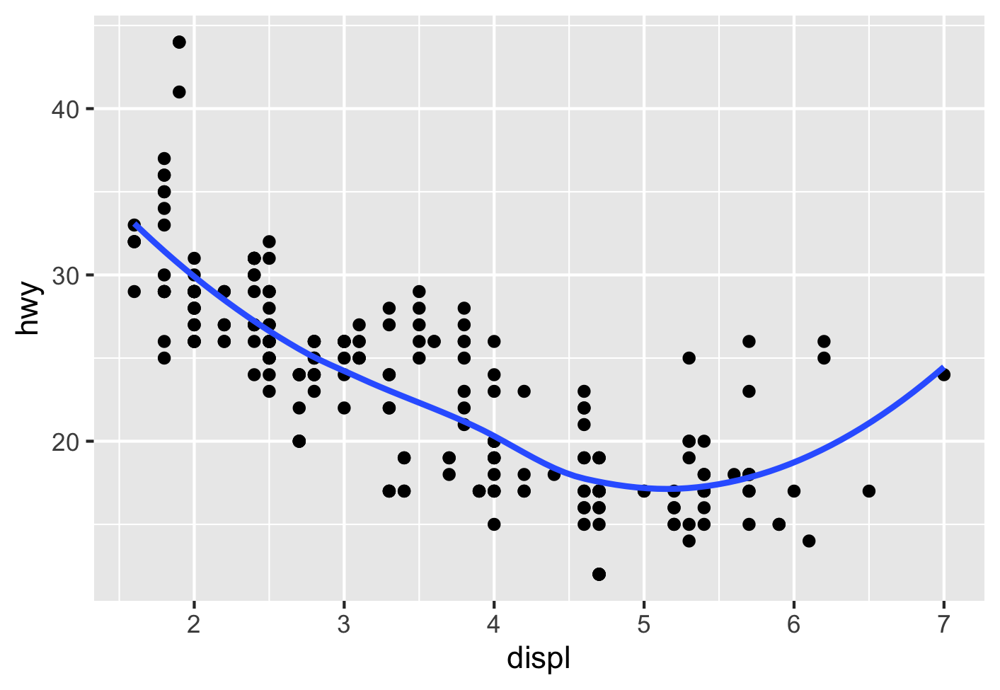

kiosk |>
point_plot(customers ~ temperature)9 Line of best fit
In prior chapters we have looked at the situation when we have a numerical response variable and either no explanatory variable or a single categorical explanatory variable. In this chapter we look at the important case when the response variable and the explanatory variable are numerical.
9.1 The beach kiosk staffing problem
We again consider a situation where the company gets a hint before making a decision—but now the hint is numerical, not categorical.
The same company operates sales kiosks at the Beach location. Management has noticed that customer traffic at the beach kiosk varies strongly with the day’s high temperature.
Over many past days, the company has recorded:
the day’s high temperature (in °F), and
the number of customers who visited the beach kiosk that day.
Let us assume that data are available for 25 different days. (As before, for understanding the ideas, the exact number of days is not important.) In the data
Table 9.1 shows the historical data.
| day | temperature | customers |
|---|---|---|
| D01 | 58 | 98 |
| D02 | 60 | 104 |
| D03 | 62 | 122 |
| D04 | 64 | 113 |
| D05 | 66 | 117 |
| D06 | 68 | 133 |
| D07 | 70 | 126 |
| D08 | 72 | 115 |
| D09 | 74 | 123 |
| D10 | 76 | 128 |
| D11 | 78 | 145 |
| D12 | 80 | 141 |
| D13 | 58 | 106 |
| D14 | 60 | 107 |
| D15 | 62 | 105 |
| D16 | 64 | 127 |
| D17 | 66 | 120 |
| D18 | 68 | 103 |
| D19 | 70 | 128 |
| D20 | 72 | 121 |
| D21 | 74 | 120 |
| D22 | 76 | 130 |
| D23 | 78 | 127 |
| D24 | 80 | 132 |
| D25 | 58 | 98 |
Based this, the company must decide how many workers to schedule for tomorrow. It can use an extremely reliable temperature forecast for its city.
The problem now is this:
Given the high temperature for a day, how many customers should the company plan for?
9.1.1 How does this differ from earlier examples we have studied?
In Chapter 5, we used no hints at all, and the mean turned out to be the best model.
In Chapter 6, our hint was categorical, and the mean within each category turned out to be the best model.
This time, the situation is fundamentally different. Our hint—temperature—is numerical, and so none of the earlier “mean-based” approaches apply directly.
One possibility would be to convert temperature into categories such as Cold, Warm, and Hot, and then apply the category-means approach. While this would work mechanically, it is somewhat artificial. Two days that differ by only one degree could end up in different categories. For example, calling 50°F Cold and 51°F Warm introduces an arbitrary cutoff that has no real business justification.
Temperature does not naturally fall into clear bins. Can we do better?
9.1.2 Toward a rule-based model
Rather than assigning a few separate numbers, the company now wants a rule that:
takes the day’s temperature as input and produces a staffing recommendation as output.
Many such rules are possible. The company wants the rule that, across all past days, does the best overall job of matching actual customer counts.
We know that with higher temperatures more people will hit the beach. This naturally leads us to consider a model of the form that Equation 9.1 shows. We just need to replace a and b with actual numbers.
\[ \widehat{\text{customers}} = a + b\,\text{temperature} \tag{9.1}\]
If we fix the values of a and b, this model produces a predicted number of customers for any temperature. For example, if we fix a value of 15 for a and 2 for b, then Equation 9.2 shows our model to determine the number of customers for any temperature.
\[ \widehat{\text{customers}} = 15 + 2\,\text{temperature} \tag{9.2}\]
Its prediction changes smoothly as temperature changes, and it avoids arbitrary cutoffs. We just arbitrarily fixed a and b without any knowledge of how well those choices would perform. What do we mean by how well those choices would perform?
If we use the model for many days, then for each day the model gives a prediction and for each day there is an actual number of customers who turn up. The difference between the actual value and the model’s prediction is called a residual.
Some residuals are positive and others are negative. If we simply added them up, large positive and negative errors could cancel each other out. Squaring the residuals ensures that all errors contribute positively and that larger errors are penalized more heavily.
We want the total of all the squared residuals to be as low as we can make it.
We can understand things better if we visualize things.
9.2 Visualizing the model
Graphically, Equation 9.2 represents a straight line. Let us generate a scatterplot of the data first. Figure 9.1 shows the plot.

Let us then add the model line from Equation 9.2 too on top of it. Right now, we need not concern ourselves with the code. Figure 9.2 shows the scatterplot with the tentative model line.

The model from Equation 9.2 when visualized in Figure 9.2 seems way off the mark. Can you see why?
Well, the line represents the model predictions and they are way off from the general region where the points actually lie! For example, we see from Figure 9.2 that two days in our historical data have had that temperature. The number of customers for those two days have been 113 and 127. But the tentative model from Equation 9.2 predicts 138. That does not make sense. So, we clearly did not make great choices for a and b.
If we want the model predictions to reflect actual data, we would want the line to be within the point cloud. That would make the predictions fall in the general region of the actual values.
Let us try again with different choices for a and b. How should we change the values? Should we increase or decrease each one?
We know that a represents where the line intercepts the y-axis at x = 0. In Figure 9.2, we cannot see that since the x-axis starts from around 55. Let us generate a plot that helps us to looks at both the axes starting from 0.
Even though a temperature of 0°F is well outside our data range, visualizing the intercept helps us understand what changing a actually does to the line.
Figure 9.3 shows the plot.

From the plot, we can see that the line correctly intersects the y-axis at 15 since a = 15. To make the line go through the point cloud, it looks like we need to make the line less steep. The value for b determines the steepness of the line. So, let us decrease it to 1.5 and see what happens.

Much better! But can we do better? We can keep on trying – we have an infinite number of choices. Can we find the best line? What does that even mean?
9.3 What do we mean by the best model?
In the previous section, we tried a few values for a and b and our second attempt proved to be much better than the first. However, we want the best line. We now look at what that even means.
We are after good predictions. Therefore the difference between the actual value and the model prediction also called residual matters. The lower that difference is the better. Figure 9.5 shows our previous model (a = 15 and b = 1.5) visualized with the error or *residual for three chosen points.

In Figure 9.5, we see that for the point at temperature = 62, the actual data had customers = 105, whereas our model predicts 108. SO the model is off by -3 (if we compute the residual as in Equation 9.3.
\[ \text{residual} = \text{actual value} - \text{model prediction} \tag{9.3}\]
We have many points and so we want an overall measure of residuals that takes into account the residuals from all the points, points and not just a few points. Even if the model is spot on for a few points, it is not very useful if it is wildly off for many others.
As we did before, we will square the residuals from all the points and add them all up. That is how much error the model has when we consider all data points.
Clearly, we want a line that is as close to all the points as possible overall, and honestly, the line in Figure 9.5 seems to be pretty good at least visually.
For this model, the total of all the squared residuals is: 1,469.
Is there a line that can give a lower value? In fact, what are the values for a and b for which we get the lowest possible total of all the squared residuals?
Since there is an infinite number of possible choices for a and b, we need a systematic way to find the values that minimize the total of the squared residuals. Mathematically, this problem can be solved using calculus. Practically, we let software do this for us.
kiosk |>
model_train(customers ~ temperature) |>
coef()(Intercept) temperature
22.06 1.42 We see two values in the output: intercept and temperature. The first is a and the second is b! These are exactly the values of a and b that minimize the sum of squared residuals.
Equation 9.4 shows the best model for our problem, given that we want a straight line and want to minimize the sum of squared residuals is:
\[ \widehat{\text{customers}} = 22.06 + 1.42\,\text{temperature} \tag{9.4}\]
The optional enrichment topic at the end of the chapter talks about possibilities other than straight lines.
Let us now see if the sum of squared residuals is smaller than what we obtained for our previous choices for a and b: 1,469.
The value is: 1,387. Lower, as we expected. But not by much. We had eyeballed very good values for a and b!
We found a line that minimizes the sum of squared residuals. Technically this is called the least-squares criterion and plays a very important role in statistics and data analysis.
9.4 Optional enrichment topic: Beond straight lines
In this chapter, we have assumed that a straight line is a reasonable model for the relationship between temperature and customer traffic. In many business settings, this assumption works well: simple models are easy to interpret, easy to communicate, and often good enough for decision-making.
However, not all relationships are well captured by a straight line.
9.4.1 When a straight line may not be appropriate
In some situations, a scatterplot may reveal patterns such as:
curvature (the relationship bends),
diminishing returns (the effect of increases slows down), or
threshold effects (behavior changes after a certain point).
For example, at very high temperatures, customer traffic at a beach kiosk might level off or even decline as conditions become uncomfortable. A straight line cannot capture this kind of behavior well, no matter how its slope and intercept are chosen.
In such cases, forcing a linear model may lead to systematic residual patterns, indicating that the model is missing something important.
9.4.2 A flexible alternative: LOWESS smoothing
One way to explore nonlinear relationships is through a technique called LOWESS (short for locally weighted scatterplot smoothing).
Figure 9.6 shows an example of a LOWESS model using the mpg data frame. In this data frame the displacement of an engine is related to the highway mileage hwy, but not in a linear way. The LOWESS model better describes it than a straight line would.

Rather than fitting a single global rule like a straight line, LOWESS works by:
focusing on a small neighborhood of points around each value of the explanatory variable, and
fitting simple local models that adapt to the data in that neighborhood.
The result is a smooth curve that follows the overall pattern of the data without requiring us to specify a particular functional form in advance.
LOWESS is especially useful for:
exploratory analysis,
visualizing trends, and
diagnosing whether a straight-line model is reasonable.
It is not intended to replace regression models in all cases, but rather to help us understand the structure of the data.
9.4.3 Models as choices, not defaults
The key takeaway is not that linear models are “wrong,” but that models are choices.
A straight line is a good choice when the relationship is approximately linear and interpretability matters.
A nonlinear model may be a better choice when the data clearly suggest curvature or changing behavior.
Flexible tools like LOWESS help us see what the data are trying to tell us before we commit to a specific model.
In all cases, the central modeling question remains the same:
Does this model capture the important structure in the data well enough to support the decisions we want to make?
This mindset—treating models as purposeful approximations rather than automatic formulas—will guide us throughout the rest of this book.